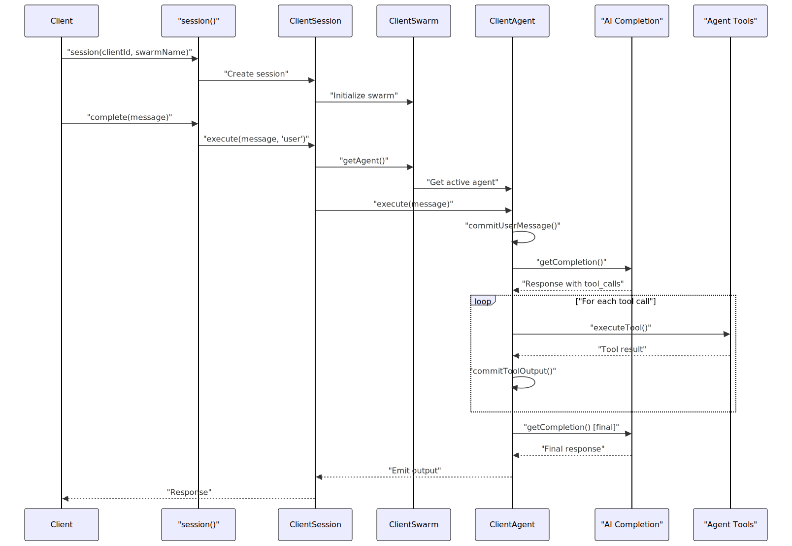

Agent Swarm Kit is a TypeScript framework for building orchestrated, multi-agent AI systems that can collaborate to solve complex problems. The library provides a comprehensive platform for creating agent networks where specialized AI agents can communicate, navigate between each other, execute tools, and maintain shared state across client sessions.
This document covers the foundational architecture and core components of the system. For specific implementation patterns, see Building Multi-Agent Systems. For API details, see Core API Functions. For integration examples, see Examples and Testing.
The framework is designed to be framework-agnostic, supporting multiple AI providers (OpenAI, Ollama, Claude, etc.) and offering features like automatic session orchestration, Model Context Protocol (MCP) integration, Redis persistence, and operator escalation capabilities.
The agent-swarm-kit follows a layered architecture centered around a dependency injection container that coordinates all system components. The architecture enables scalable multi-agent orchestration with clear separation between public APIs, service layers, and core implementations.

The ClientAgent class serves as the core execution engine for individual agents, handling message processing, tool calls, and AI model interactions:

The ClientAgent implements sophisticated execution patterns including tool call validation, model recovery strategies, and event-driven communication through subjects for handling agent state changes, tool outputs, and error conditions.
The session layer manages client connections and message flow through the swarm system:

The ClientSession enforces policy validation for both input and output messages, coordinates with the swarm for agent execution, and provides event-driven messaging capabilities for real-time client communication.
The swarm layer coordinates multiple agents and manages navigation between them:
| Component | Purpose | Key Methods |
|---|---|---|
ClientSwarm |
Agent coordination and navigation | getAgent(), changeToAgent(), emit() |
SwarmConnectionService |
Swarm lifecycle management | getSwarm(), navigation stack handling |
SwarmPublicService |
Public swarm API | Agent name resolution, output coordination |
The swarm maintains a navigation stack that allows agents to call each other and return to previous contexts, enabling complex multi-agent workflows with proper state management.
The system processes messages through a well-defined pipeline that ensures proper validation, execution, and output handling:

This flow demonstrates the coordination between layers and the sophisticated tool execution pipeline that handles both simple completions and complex multi-tool workflows.
The framework supports multiple AI providers through the ICompletion interface and adapter pattern:
Multiple storage backends are supported for different use cases:
The Model Context Protocol (MCP) enables integration with external tools and services, allowing agents to access capabilities written in different languages and running on separate systems.